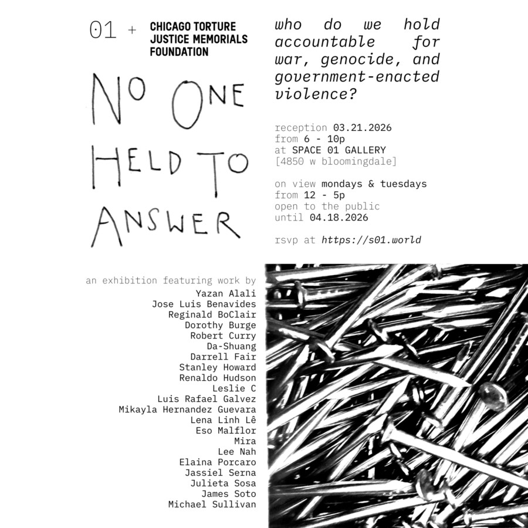

No One Held To Answer
RSVP here: https://luma.com/9sfykh55
Who do we hold accountable for war, genocide, and government-enacted violence? No One Held To Answer is a group exhibition and fundraiser curated with the support of Chicago Torture Justice Memorials Foundation. Attendees are encouraged to bring non-perishable food items to the reception for a mutual aid distribution on 04.11.2026! Artists featured:
Yazan Alali Jose
Luis Benavides Reginald BoClair
Dorothy Burge
Robert Curry
Da-Shuang
Darrell Fair